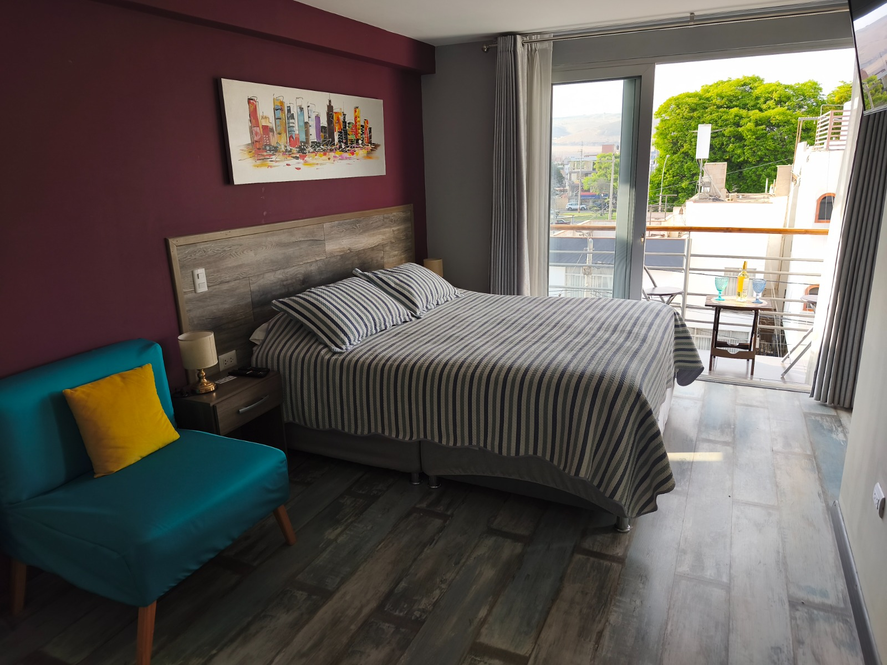
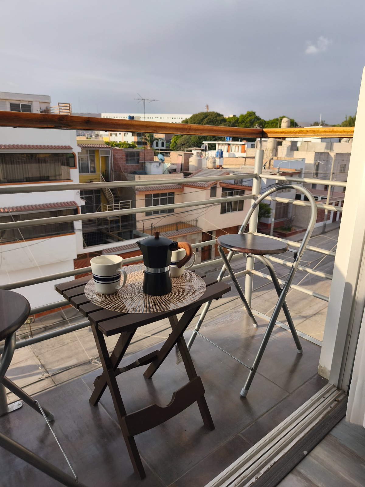
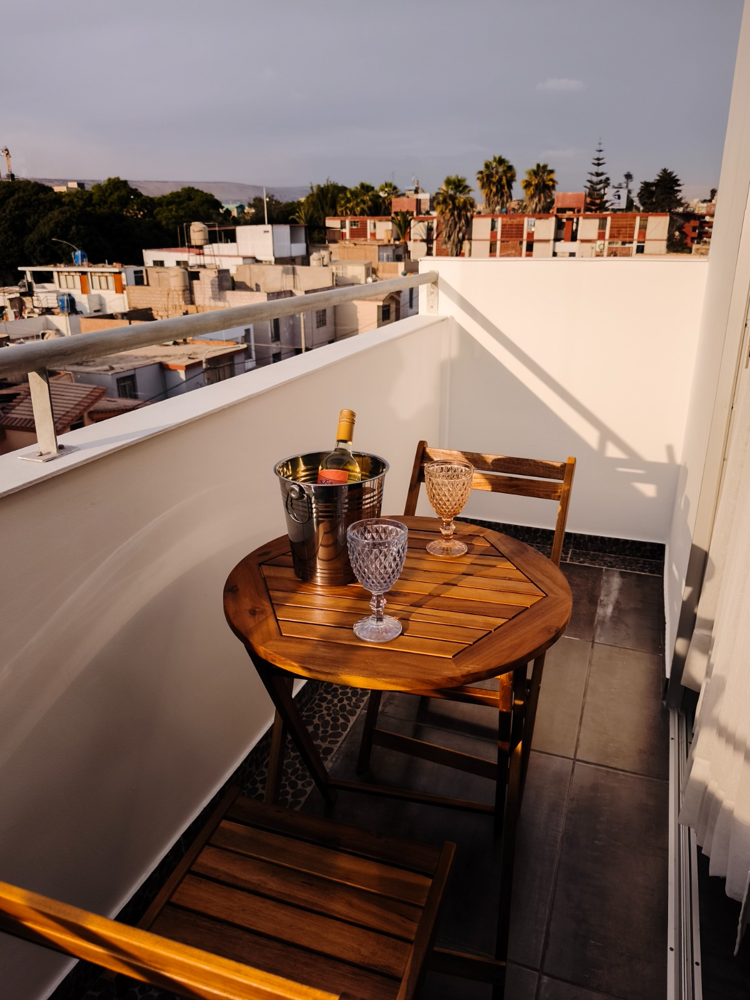
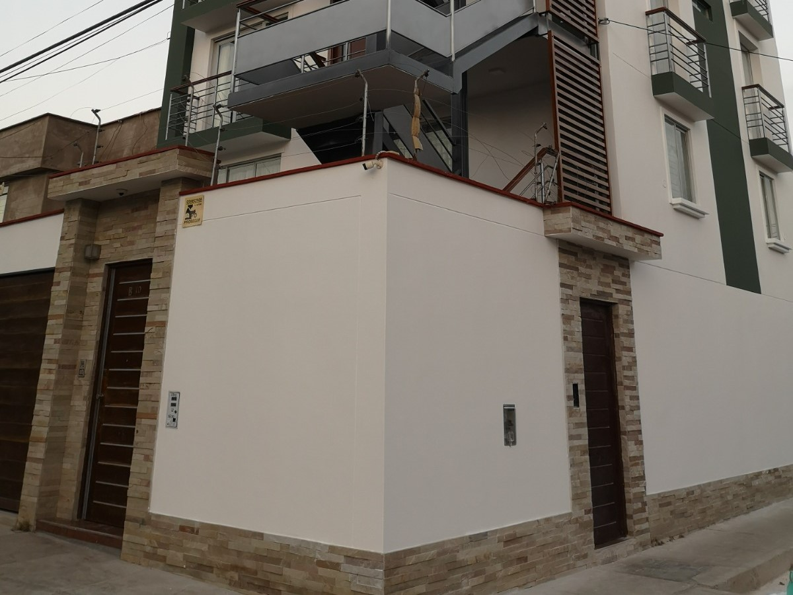
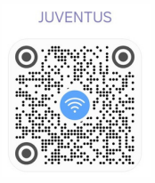
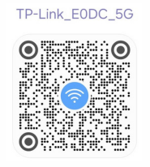
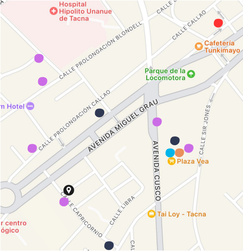

HOSPEDAJE · TACNA, PERÚ
Guía de Instalación para que te sientas como en casa.
Suites cuidadas al detalle para hacer de cada visita una estadía simple, cómoda y memorable.
Contáctanos ↗ESTADÍAS
CON PROPÓSITO
CON PROPÓSITO
RINCONES DE LA SUITE
Pequeños momentos para quedarse.



INFORMACIÓN ÚTIL
Preguntas frecuentes
Pasa el cursor sobre la tarjeta o tócala para ver la respuesta.
INSTRUCCIONES
- Para llegar a Arica Suites, puedes tomar un taxi a la dirección indicada. Al conductor puedes mencionarle que estamos cerca de la parte baja de la Concha Acústica.
- El ingreso se encuentra por la calle Capricornio, en Urbanización Rosa Ara II etapa.
- Al llegar, comunícate con nosotros para orientarte y coordinar una bienvenida tranquila.
- Sube con tu equipaje al piso correspondiente a la suite que reservaste.
FRONTIS DE LA CASA

ENTRADAARICA SUITES ↓
UNA ESTADÍA AGRADABLE PARA TODOS
Reglas de la casa
Estamos felices de recibirte en Arica Suites. Ayúdanos cumpliendo estas reglas para que construyamos juntos un espacio seguro y agradable para todos.
- Desde las 10 p. m. hasta las 7 a. m., evita hacer ruidos que perturben el sueño de otros.
- No está permitido el ingreso de personas que no fueron registradas en el check-in.
- No está permitido fumar dentro del alojamiento.
- El consumo de bebidas alcohólicas debe ser moderado.
- En caso de pérdida o daño por uso inadecuado, el huésped asumirá el costo de la reparación y/o reemplazo.
- No está permitido el ingreso de mascotas.
Más detalles publicados en la puerta de la habitación.
CONÉCTATE A INTERNET
WiFi
Apartamentos 204 · 205 · 206
Red JUVENTUS
Contraseña 20202020
Apartamentos 304 · 305 · 306
Red TP-LINK_EODC_5G
Contraseña 13482718
Apartamentos 404 · 405 · 406 · 505
Red TP-LINK-E664
Contraseña 07907005


GUÍA DEL BARRIO
Lugares de aprovisionamiento cercanos.
Todo lo esencial, a pocos minutos del alojamiento.

- ●Alojamiento Arica Suites
- Cochera
- Cajeros
- Minimarket
- Farmacia
- Restaurante